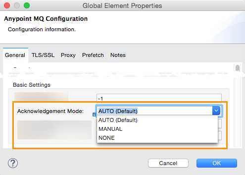

About Acknowledgement Mode
Anypoint MQ lets you determine how to process messages in Anypoint Studio using the Anypoint MQ connector.
Two acknowledgement responses can occur:
-
Acknowledgement (ack) - Indicates that an application has received a message.
-
Negative Acknowledgement (nack) - Indicates that an application doesn’t want the current message. MQ returns the message to the queue so that another application can receive the message.
The Anypoint MQ connector provides tools for setting these states globally or locally in your Studio application.
Global and Local States
The Anypoint MQ connector provides global and local states for specifying how your Studio application receives messages from a queue.
Global State
Lets you specify use the Studio Global Element Properties menu to specify a strategy for processing all messages in a flow. The global state provides these choices:
-
AUTO - The Anypoint MQ connector automatically sends an Ack or Nack at the end of a flow depending on whether the MQ connector detects a Catch Exception Strategy (ACK) or a Rollback Exception Strategy (NACK). See Creating an Auto Acknowledge Flow in Anypoint Studio for an example.
There are two possible outcomes:
-
ACK - The flow succeeds or a Catch Exception Strategy occurs. This code shows the Catch Exception Strategy:
<catch-exception-strategy doc:name="Catch Exception Strategy" when="exception.causedBy(UnsupportedOperationException)"> <logger message="Will ACK" level="ERROR" doc:name="Logger"/> </catch-exception-strategy> -
NACK - A Rollback Exception Strategy occurs:
<rollback-exception-strategy doc:name="Rollback Exception Strategy"> <logger message="Will NACK" level="ERROR" doc:name="Logger"/> </rollback-exception-strategy>
-
-
MANUAL - An application indicates that it sends its own Ack or Nack using the Anypoint MQ connector local state. The MQ connector doesn’t provide any actions automatically. See Creating a Manual Acknowledge Flow in Anypoint Studio for an example.
-
NONE - An application receives a message and the MQ connector immediately acknowledges and deletes the message. This state risks losing the message if it is not consumed correctly, but is typically used when there is a flow of constantly updating messages, such as a news feed where each subsequent message provides more detail on any messages that preceded the message. This state takes a risk, but makes coding easier. See Creating a None Acknowledge Flow in Anypoint Studio for an example.
You can set the global state in the Acknowledgement Mode field:

Creating an Auto Acknowledge Flow in Anypoint Studio
If you are using the auto state, set a choice-exception-strategy and the Anypoint MQ connector automatically sends the ack or nack depending on what exception choices you make. The code that follows illustrates the use of the auto state.
The following code demonstrates the Studio flows:
In this example, are these two flows:
-
autoHttp - Sets up an HTTP Connector to listen at
0.0.0.0:8081, sets an Anypoint MQ connector to publish messages, and sets the acknowledgement mode to auto. -
autoMq - Sets an Anypoint MQ connector to consume messages and uses the Java class RandomError to create possible exceptions to cause the Auto function to send an acknowledgment or a negative acknowledgement depending on the choices. The logger lists the ACK or NACK choices on the console.
The Error handling section of the flow contains a Catch Exception Strategy to cause the MQ connector to send the ACK, and a Rollback Exception Strategy to cause the MQ connector to send the NACK.
Auto XML Code
The XML code for the Auto Acknowledgement Mode is:
<?xml version="1.0" encoding="UTF-8"?>
<mule xmlns:http="http://www.mulesoft.org/schema/mule/http" xmlns:anypoint-mq="http://www.mulesoft.org/schema/mule/anypoint-mq" xmlns:context="http://www.springframework.org/schema/context" xmlns:dw="http://www.mulesoft.org/schema/mule/ee/dw" xmlns:metadata="http://www.mulesoft.org/schema/mule/metadata" xmlns:tracking="http://www.mulesoft.org/schema/mule/ee/tracking" xmlns="http://www.mulesoft.org/schema/mule/core" xmlns:doc="http://www.mulesoft.org/schema/mule/documentation"
xmlns:spring="http://www.springframework.org/schema/beans"
xmlns:xsi="http://www.w3.org/2001/XMLSchema-instance"
xsi:schemaLocation="http://www.springframework.org/schema/beans http://www.springframework.org/schema/beans/spring-beans-current.xsd
http://www.mulesoft.org/schema/mule/core http://www.mulesoft.org/schema/mule/core/current/mule.xsd
http://www.mulesoft.org/schema/mule/ee/tracking http://www.mulesoft.org/schema/mule/ee/tracking/current/mule-tracking-ee.xsd
http://www.mulesoft.org/schema/mule/ee/dw http://www.mulesoft.org/schema/mule/ee/dw/current/dw.xsd
http://www.springframework.org/schema/context http://www.springframework.org/schema/context/spring-context-current.xsd
http://www.mulesoft.org/schema/mule/anypoint-mq http://www.mulesoft.org/schema/mule/anypoint-mq/current/mule-anypoint-mq.xsd
http://www.mulesoft.org/schema/mule/http http://www.mulesoft.org/schema/mule/http/current/mule-http.xsd">
<context:property-placeholder location="ackmodes.properties"/>
<anypoint-mq:config name="Anypoint_MQ_Configuration" doc:name="Anypoint MQ Configuration">
<anypoint-mq:provider url="https://mq-us-east-1.anypoint.mulesoft.com/api/v1" clientId="${mq.clientId}" clientSecret="${mq.clientSecret}"/>
</anypoint-mq:config>
<http:listener-config name="HTTP_Listener_Configuration" host="0.0.0.0" port="8081" doc:name="HTTP Listener Configuration"/>
<flow name="autoHttp">
<http:listener config-ref="HTTP_Listener_Configuration" path="/" doc:name="HTTP"/>
<anypoint-mq:publish config-ref="Anypoint_MQ_Configuration" destination="auto" doc:name="Anypoint MQ"/>
</flow>
<flow name="autoMq">
<anypoint-mq:subscriber config-ref="Anypoint_MQ_Configuration" destination="auto" doc:name="Anypoint MQ" pollingTime="10000"/>
<component class="ackmodes.RandomError" doc:name="Java"/>
<logger level="ERROR" doc:name="Logger" message="Will ACK"/>
<choice-exception-strategy doc:name="holaChoice_Exception_Strategy">
<catch-exception-strategy doc:name="Catch Exception Strategy" when="exception.causedBy(UnsupportedOperationException)">
<logger message="Will ACK" level="ERROR" doc:name="Logger"/>
</catch-exception-strategy>
<rollback-exception-strategy doc:name="Rollback Exception Strategy">
<logger message="Will NACK" level="ERROR" doc:name="Logger"/>
</rollback-exception-strategy>
</choice-exception-strategy>
</flow>
</mule>|
Ensure that you set the Client ID (mq.clientId) and Client Secret (mq.clientSecret) values in a properties file. In this case, they are set in the /ackmodes/classes/ackmodes.properties file, which contains: |
See Random Error Generator for an explanation of how exceptions are thrown using a Java testing program, which is called in this statement:
<component class="ackmodes.RandomError" doc:name="Java"/>Creating a Manual Acknowledge Flow in Anypoint Studio
You can set the Manual Acknowledgement Mode from the Anypoint MQ connector’s Global Element Properties:
In the manual flow, the choice-exception-strategy is also set as in the flow. In this case, the application uses individual Anypoint MQ connector instances with the operation set to either Ack or Nack depending on exceptions sent by the Random Error Java Class.
Manual XML Code
The XML code for the Manual Acknowledgement Mode is:
<?xml version="1.0" encoding="UTF-8"?>
<mule xmlns:http="http://www.mulesoft.org/schema/mule/http" xmlns:anypoint-mq="http://www.mulesoft.org/schema/mule/anypoint-mq" xmlns:context="http://www.springframework.org/schema/context" xmlns:dw="http://www.mulesoft.org/schema/mule/ee/dw" xmlns:metadata="http://www.mulesoft.org/schema/mule/metadata" xmlns:tracking="http://www.mulesoft.org/schema/mule/ee/tracking" xmlns="http://www.mulesoft.org/schema/mule/core" xmlns:doc="http://www.mulesoft.org/schema/mule/documentation"
xmlns:spring="http://www.springframework.org/schema/beans"
xmlns:xsi="http://www.w3.org/2001/XMLSchema-instance"
xsi:schemaLocation="http://www.springframework.org/schema/beans http://www.springframework.org/schema/beans/spring-beans-current.xsd
http://www.mulesoft.org/schema/mule/core http://www.mulesoft.org/schema/mule/core/current/mule.xsd
http://www.mulesoft.org/schema/mule/ee/tracking http://www.mulesoft.org/schema/mule/ee/tracking/current/mule-tracking-ee.xsd
http://www.mulesoft.org/schema/mule/ee/dw http://www.mulesoft.org/schema/mule/ee/dw/current/dw.xsd
http://www.springframework.org/schema/context http://www.springframework.org/schema/context/spring-context-current.xsd
http://www.mulesoft.org/schema/mule/anypoint-mq http://www.mulesoft.org/schema/mule/anypoint-mq/current/mule-anypoint-mq.xsd
http://www.mulesoft.org/schema/mule/http http://www.mulesoft.org/schema/mule/http/current/mule-http.xsd">
<http:listener-config name="HTTP_Listener_Configuration_manual" host="0.0.0.0" port="8082" doc:name="HTTP Listener Configuration"/>
<flow name="manualHttp">
<http:listener config-ref="HTTP_Listener_Configuration_manual" path="/" doc:name="HTTP"/>
<anypoint-mq:publish config-ref="Anypoint_MQ_Configuration" destination="manual" doc:name="Anypoint MQ"/>
</flow>
<flow name="manualMq">
<anypoint-mq:subscriber config-ref="Anypoint_MQ_Configuration" destination="manual" doc:name="Anypoint MQ" pollingTime="10000" acknowledgementMode="MANUAL"/>
<component class="ackmodes.RandomError" doc:name="Java"/>
<logger level="ERROR" doc:name="Logger" message="Will ACK"/>
<anypoint-mq:ack config-ref="Anypoint_MQ_Configuration" doc:name="Anypoint MQ"/>
<choice-exception-strategy doc:name="holaChoice_Exception_Strategy">
<catch-exception-strategy doc:name="Catch Exception Strategy" when="exception.causedBy(UnsupportedOperationException)">
<logger message="Will ACK" level="ERROR" doc:name="Logger"/>
<anypoint-mq:ack config-ref="Anypoint_MQ_Configuration" doc:name="Anypoint MQ"/>
</catch-exception-strategy>
<catch-exception-strategy doc:name="Rollback Exception Strategy">
<logger message="Will NACK" level="ERROR" doc:name="Logger"/>
<anypoint-mq:nack config-ref="Anypoint_MQ_Configuration" doc:name="Anypoint MQ"/>
</catch-exception-strategy>
</choice-exception-strategy>
</flow>
</mule>See Random Error Generator for an explanation of how exceptions are thrown using a Java testing program, which is called in this statement:
<component class="ackmodes.RandomError" doc:name="Java"/>Creating a None Acknowledge Mode in Anypoint Studio
You can set the None Acknowledgement Mode from the Anypoint MQ connector’s Global Element Properties:
In the NONE flow, the Anypoint MQ connector always sends an ACK no matter what occurs. The example that follows emphasizes this risk by using the Java class RandomError to create possible exceptions, but ignores the exceptions and sends the ACK regardless:
<component class="ackmodes.RandomError" doc:name="Java"/>
<logger level="ERROR" doc:name="Logger" message="Always ACKs as soon as a message is received"/>Using this mode simplifies an application, but increases the risk. This mode is best when messages are constantly updating each other, such as in a news feed where details unfold in a news event. If an exception did occur, the next message would have a chance for obtaining the correct content.
None XML Code
The XML code for the None Acknowledgement Mode is:
<?xml version="1.0" encoding="UTF-8"?>
<mule xmlns:http="http://www.mulesoft.org/schema/mule/http" xmlns:anypoint-mq="http://www.mulesoft.org/schema/mule/anypoint-mq" xmlns:context="http://www.springframework.org/schema/context" xmlns:dw="http://www.mulesoft.org/schema/mule/ee/dw" xmlns:metadata="http://www.mulesoft.org/schema/mule/metadata" xmlns:tracking="http://www.mulesoft.org/schema/mule/ee/tracking" xmlns="http://www.mulesoft.org/schema/mule/core" xmlns:doc="http://www.mulesoft.org/schema/mule/documentation"
xmlns:spring="http://www.springframework.org/schema/beans"
xmlns:xsi="http://www.w3.org/2001/XMLSchema-instance"
xsi:schemaLocation="http://www.springframework.org/schema/beans http://www.springframework.org/schema/beans/spring-beans-current.xsd
http://www.mulesoft.org/schema/mule/core http://www.mulesoft.org/schema/mule/core/current/mule.xsd
http://www.mulesoft.org/schema/mule/ee/tracking http://www.mulesoft.org/schema/mule/ee/tracking/current/mule-tracking-ee.xsd
http://www.mulesoft.org/schema/mule/ee/dw http://www.mulesoft.org/schema/mule/ee/dw/current/dw.xsd
http://www.springframework.org/schema/context http://www.springframework.org/schema/context/spring-context-current.xsd
http://www.mulesoft.org/schema/mule/anypoint-mq http://www.mulesoft.org/schema/mule/anypoint-mq/current/mule-anypoint-mq.xsd
http://www.mulesoft.org/schema/mule/http http://www.mulesoft.org/schema/mule/http/current/mule-http.xsd">
<http:listener-config name="HTTP_Listener_Configuration_none" host="0.0.0.0" port="8083" doc:name="HTTP Listener Configuration"/>
<flow name="noneHttp">
<http:listener config-ref="HTTP_Listener_Configuration_none" path="/" doc:name="HTTP"/>
<anypoint-mq:publish config-ref="Anypoint_MQ_Configuration" destination="none" doc:name="Anypoint MQ"/>
</flow>
<flow name="noneMq">
<anypoint-mq:subscriber config-ref="Anypoint_MQ_Configuration" destination="none" doc:name="Anypoint MQ" pollingTime="10000" acknowledgementMode="NONE"/>
<component class="ackmodes.RandomError" doc:name="Java"/>
<logger level="ERROR" doc:name="Logger" message="Always ACKs as soon as a message is received"/>
</flow>
</mule>Random Error Generator
The following Java test program generates random errors that you can use to test your application. This program gets a random integer between 0 and 100, and makes these choices depending on the value:
| Value | Error State | What happens in the Studio Flow |
|---|---|---|
0 - 32 |
No error, returns the passed event context. |
Passes through and the application sends an ACK |
33 - 65 |
Error, returns an illegal state exception. |
Application sends a NACK |
66 - 100 |
Error, returns an unsupported operation exception. |
Application sends an ACK |
package ackmodes;
import java.util.Random;
import org.mule.api.MuleEventContext;
import org.mule.api.lifecycle.Callable;
public class RandomError implements Callable {
@Override
public Object onCall(MuleEventContext eventContext) throws Exception {
int randomInt = new Random().nextInt(100);
if (randomInt > 66) {
throw new IllegalStateException("This should be retried");
} else if (randomInt > 33) {
throw new UnsupportedOperationException("This should not be retried");
} else {
return eventContext;
}
}
}